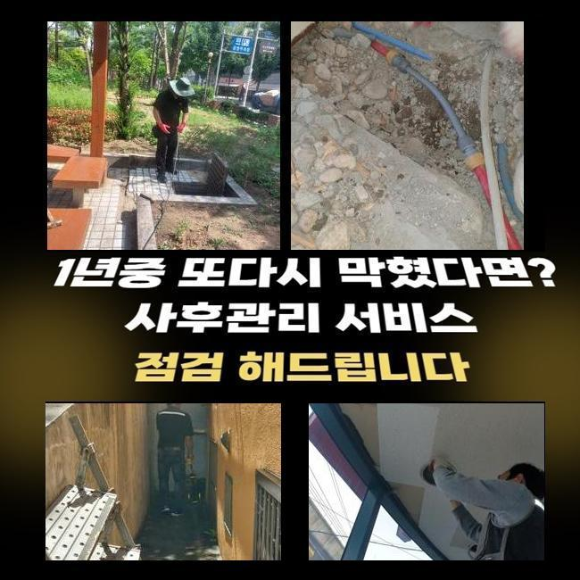
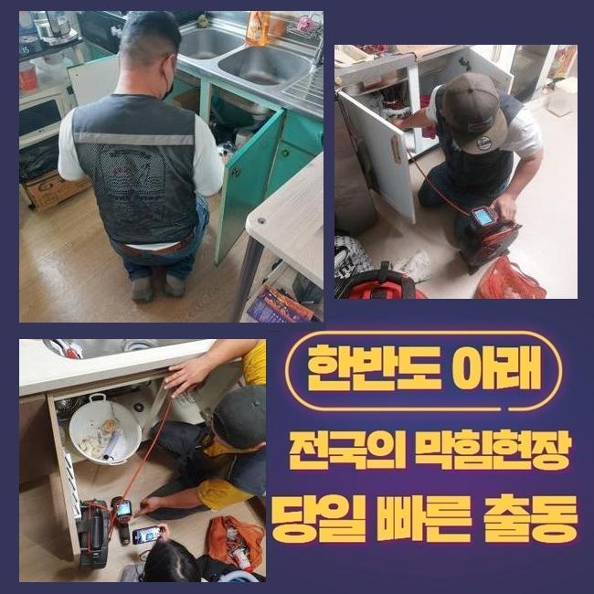
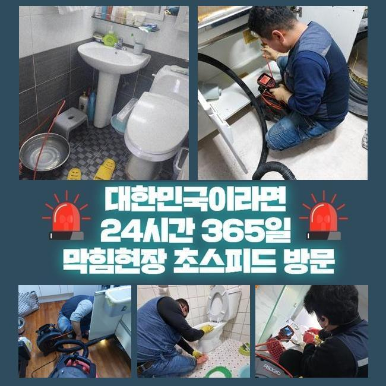
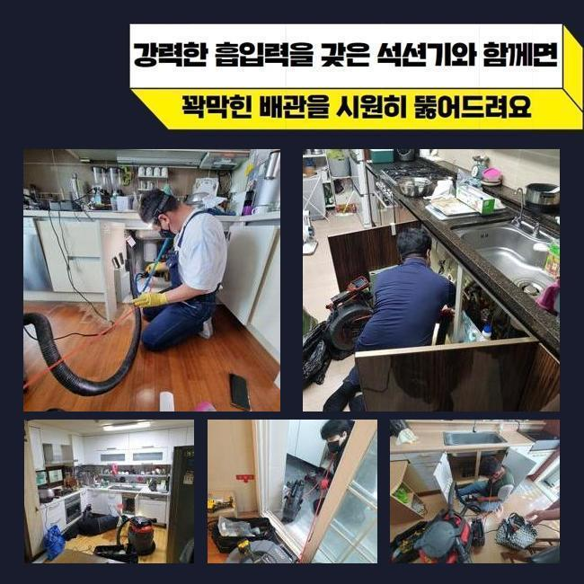
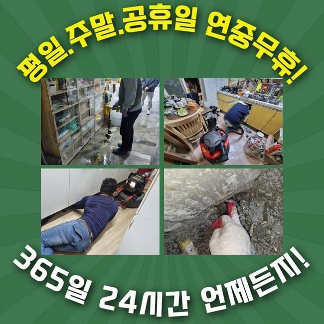
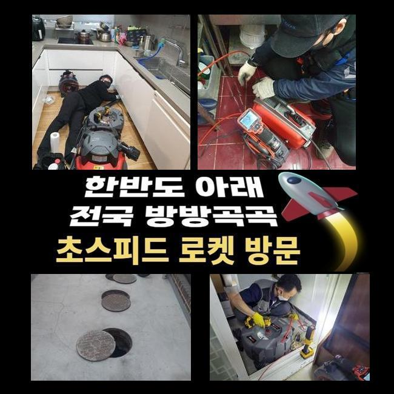
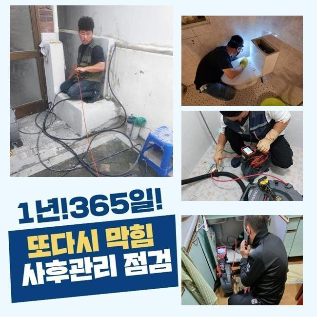

🏠 용인 풍덕천동화장실바닥막힘 고기동 하수구청소 배관막힘
용인 고기동 싱크대막힘 전문 시공 후기

📋 작업 개요
- 위치: 용인 고기동, 고기동, 용인
- 서비스 유형: 싱크대막힘, 하수구막힘, 배관막힘, 집수정막힘, 누수수리, 역류해결, 뚫는업체, 배관청소, 고압세척
- 작업 일시: 2025. 3. 3. 12:34
- 업체명: 하수구수사대 (010-5615-2118)
🔍 문제 상황
용인 풍덕천동화장실바닥막힘 고기동 하수구청소 배관막힘
하수도막힘이 발현되었을때 단순하게 처리된다면 좋은데 방치하게된다면 2차적인 피해들로 불거질수있어요
문제가 나타났을때 조치하는게 좋은데 혹시나 방치하고 계신다면 업체와함께 막힘현상을 해결해보시길 바래요
금일 방문한곳은 상가건물로 이루어져 있었는데 막힘문제가 발생하여 의뢰를 주셨는데요
이런 문제들이 발생하면 급한상태가 대부분이므로 신속히 내방해드려요
상가시설안 식당쪽에서 막히게 되었다고 하셨죠
하루뒤에 식당운영을 진행해봐야 하다보니 신속히 해결해야했죠
막힌이유가 무엇인지 파악하기위해 신속하게 이동했죠
식당입구쪽과 내부쪽 부분들도 살펴보니 트렌치부터 연결되어있는 메인관도 막혀있었어요
현재상태에 대하여 알려드리고나서 수리에 착수하기로 했는데요
작업착수전 반드시 고객님께 상황에대해 설명드리고있죠

🔎 원인 분석
💡 전문가 진단: 정밀 진단 장비를 사용하여 슬러지의 고착 여부를 판명하고 타격/세척 작업을 실시했습니다.
샤프트장비를 배관속에 투입해 내부속에 쌓여있는 잔해물을 분쇄시켰죠
식당장소여서 기름슬러지가 가득했어요
조심스레 작업하여 안속에 쌓인것들을 제거했습니다
작업을 진행하며 정상적으로 제거과정이 이루어지는지 하수구카메라로 체크까지 해주었죠
역류하고있던 배관이다보니 신경써가며 크랙이 발생하지않게 작업했는데 다행인것은 2차증세없이 역류문제를 해결하여 안심했어요
외부하수구를 작업한후 건물안으로 장소를 옮겼어요
식당내부에 있는 싱크대배관이 막히게되어 내시경을 통해 검사를 시작했답니다
검사를해보니 기름기가 석회물로 변형되어 막히게된걸로 살필수있었죠
석회이물을 없애고자 샤프트기를 써서 분해시켰어요
다음으로는 남겨진 이물을 흡입기로 빨아들여주는 작업으로 이물제거를 완료했죠
이러한 문제가 발생되는것은 여러원인을 통하여 발현되지만 확실한원인은 배관속에 이물이 유입되어 막히는것이 대부분이죠

🔧 작업 과정
그렇기때문에 가지각색의 이물이 들어가지않게 주의하시는게 좋으며 주기로 배관을 점검하여 상태가 어떠한지 살펴봐야 한답니다
이렇게 한참동안 작업에 몰두하여 트렌치내에 잔존되었던 기름잔해와 오염물질들을 해결할수있었죠
집수정쪽에도 막힘현상이 있는걸 알아냈어요 집수정은 석션기나 샤프트기로는 뚫는것은 쉽지않기에 고압청소기가 필요한 상황이었죠
청소과정에 대하여 고객님에게 동의를얻고 고압세척기의 필요성에 대하여 안내드렸어요
고압세척기는 강한압의 물이 사용되기에 수리기사의 조심성이 필요하답니다
주의하지 않는다면 하수구내벽에 크랙이 발생하여 배관을 교체하는 경우로까지 불거질수있죠
집수정내에 기름이물이 쌓여있어 고압세척기를 통해 오염물들을 밀어내준뒤 제거해냈답니다
내외부를 해결했더니 정상적인 배수상황으로 복구된걸 확인할수있었죠
식당처럼 영업하는 장소에서 하수구가 막히게되면 금전적인 피해를 입으시기 때문에 주말에도 방문이 가능합니다
배수구망과 하수도트랩을 설치해 막힘문제와 악취현상을 방지해볼수 있겠습니다
확실하게 처리하는 해결책은 막힘징조가 나타날때 즉각적으로 전문가와 함께 맡기시는것이죠
여러번 말했지만 막힘증세를 내버려 두신다면 물이넘치거나 누수되는 현상들로 이어진답니다
막힘증세를 처리하고자 셀프조치를 해보셨을텐데 가볍게 조치해볼수있는 방법들을 알려드려볼게요
끓는물이나 하수도클리너를 적당한 양으로 하수구입구에 부어보고 그렇게 해서도 뚫리지않으면 전문가를 호출해 도움을 받아보시는게 좋아요
과하게 시도한다면 배관에 손상이 일어날 확률도 있어 권장량으로 시도바랍니다
어느장소든 배관이 막히면 불편할수밖에 없답니다
저희업체는 하수구가 존재하는 어떤곳이라도 방문할수 있어요


✅ 작업 완료
작업에 착수할때 투명하게 작업과정을 보여줘야 신뢰가 갈거에요
현장상태를 살핀뒤 비용과 관련하여 자세히 일러드려요
싱크대나 화장실 하수구는 석션기계로만 처리될경우 오만원으로 책정되니 참고하세요!
이밖으로도 궁금한부분이 있으면 시간상관없이 전화주신다면 꼼꼼한 응대로 돕도록 할게요!
하수구가 막혔다면 빠르게 대응하여 손해를 줄이시길 바래요




⚠️ 베란다 누수 및 방수 관리 방법
- ✅ 비가 많이 올 때 창틀 주변이나 아래층 천장에 얼룩이 생기는지 정기적으로 확인해 보세요.
- ✅ 우수관 주변 실리콘 마감이 들뜨거나 깨진 틈새가 있는지 손상 여부를 수시로 체크하세요.
- ✅ 베란다 바닥 타일의 줄눈(메지)이 소실되면 그 틈으로 물이 침투하여 누수가 유발됩니다.
- ✅ 누수 의심 증상 발견 시 방치하면 아래층 손실이 커지므로 즉시 전문가의 진단을 받으십시오.
💡 핵심 정리
- 확실한 장비 작업(내시경 점검 및 샤프트 스케일링)으로 원인을 뿌리 뽑습니다.
- 작업 후 1년 이내에 동일한 부위 재발 시 100% 무상 A/S 서비스를 보장합니다.
- 서울 · 경기 · 인천 전 지역에 24시간 언제든 긴급 출동할 수 있도록 항시 대기 중입니다.
❓ 자주 묻는 질문 (FAQ)
🚨 용인 고기동 싱크대막힘 문제로 고민이신가요?
정확한 원인 진단과 확실한 시공으로 재발 없는 해결을 약속드립니다.
24시간 긴급 출동 | 서울 · 경기 · 인천 전지역 | 1년 내 재발 시 무상 A/S